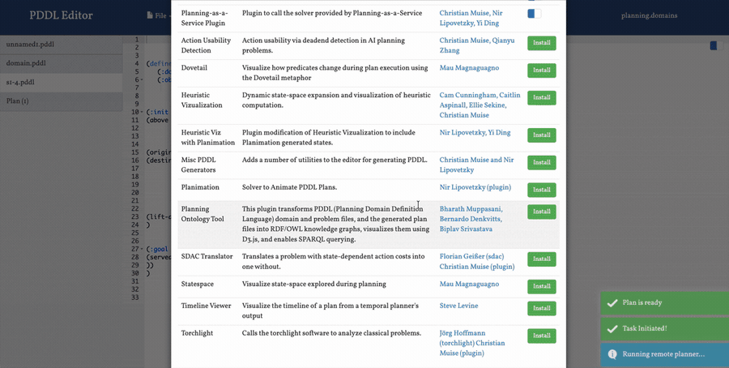

Planning Ontology Tool · Live Demo
PDDL → Knowledge Graph → SPARQL

In the editor
1 · Load PDDLPick domain, problem & plan files in Planning.Domains.
2 · Build the graphFiles are parsed and converted to an RDF/OWL knowledge graph.
3 · VisualizeExplore the planning graph interactively with D3.js.
4 · QueryRun SPARQL to answer competency questions over the graph.